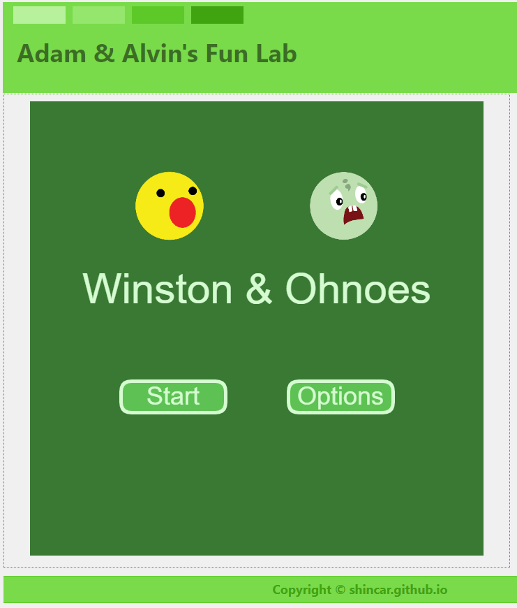
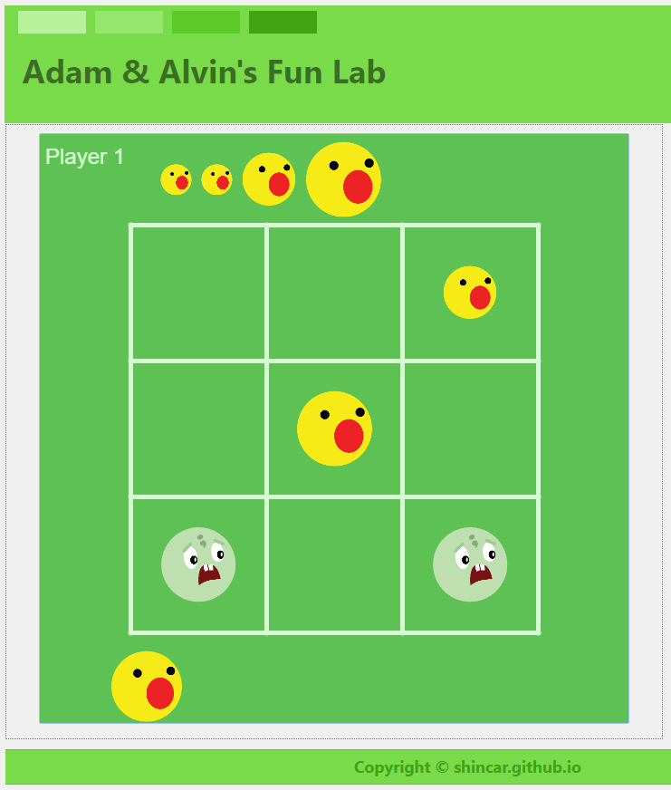
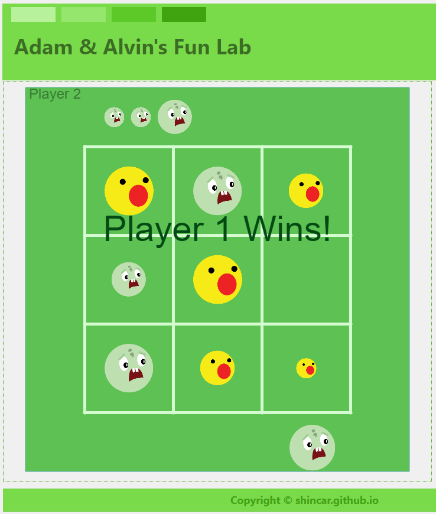

趁新鮮記錄一下我的第二個作品 - Winson & Ohnoes
2019/02/15
這個作品是改編自一個我覺得很有趣的桌遊，叫做奇雞連連。是我跟Alvin去年在桃園展演中心的
桌遊展接觸到的遊戲。基本上像是進階版的 O X 遊戲。當時買了卡卡頌和速速城國，考慮到不想一口氣買太多，所以沒買奇雞連連。一直有點後悔沒買，學了ProcessJS
之後，就想說拿他的規則來寫一個網頁小遊戲當練功吧!
遊戲連結： 點我玩 Winston & Ohnoes
遊戲規則：
- 基本規則跟 O X 一樣，每位玩家在九宮格中輪流下棋。
- 每位玩家起始都有6顆棋子。分別是兩顆小棋、兩顆中棋、兩顆大棋。
- 跟 O X 不一樣的地方在於下棋時，尺寸大的棋子可以蓋過對方玩家尺寸較小的棋子。
- 已經下過的棋子，可以在九宮格中自由移動。可以移到沒有棋子的地方，也可以選擇蓋過對方尺寸比你小的棋子。
- 結束條件就跟原本的 O X一樣，先連線成功者獲勝。
- 如果將自己的棋子拿起來的時候，下面有對方的棋子，而且對方因你將棋子拿起來而連線成功，也算對方獲勝。
遊戲畫面：



遊戲玩法：
- 按下Start之後，會進入遊戲畫面。上方會顯示目前是哪個玩家的回合。同時也列出玩家還沒下過的棋子。
- 點選想要下的棋子之後，再點選要下的位置。
- 玩家一為Winston，玩家二為Ohnoes。兩人輪流下棋，直到有一方獲得勝利。
- 結束遊戲之後，點選任意位置即可回到主畫面。再次按下Start就可以再玩一次。
遊戲連結： 點我玩 Winston & Ohnoes
後記：
原本的版本只有很單調的兩個顏色的圈圈，Demo給老婆看的時候，她說：這配色看來很不吸引人。 QQ
早上跟Alvin討論時，本來要用他跟妹妹的大頭照當玩家的圖示。結果他說他想要Khan Academy的Ohnoes。 所以我就把Winston跟Ohnes找來當素材啦! 希望他們不會介意。 如果有侵權問題的話，可以到這裡留言給我。謝啦~ 下次見~ 拜拜
Add a theme for a blog
2019/02/13
I'm now mastered Intro to HTML/CSS: Making webpages in Khan Academy. So, next step is to add a theme to style this blog with CSS. In this page, it provided some tips and I will use it to have my blog looks more pretty.
First, pick a palette from Paletton. It's really convenient for user to just move a dot in outter ring to a color you'd like. Then move indicator in middle circle to get a palette. For example, I like green a lot. And this is the pallete I'm going to use.
I'm really not a art-man. So I decide to not only use the pallete from Paletton, but also learn how to layout a website. Plus what I learned from Khan Academy, I know how to view source of a page. You could put "view-source:http://paletton.com/examples/webpage/index-white.html" in URL bar of chrome browser to know how the example page named each block of a site, e.g. header, menu, content, and footer...,etc. I'm going to take a snapshot of my current site and you could compare later when I make CSS work.

Now, it looks better. Probably could be improved after I learn more. Stay tuned.
My first game
2019/01/31
Here is my first game - Click Game.
Actually it's not a game. It's just a prototype of game that use ProcessJS to create a board and let user to click on the grid. It's a course project when I learned in Khan Academy. Now I just finished the course and thought it would be a good idea to use github pages to host a website with my kid. We could learn together and I could guide him to the world of programming sometimes.